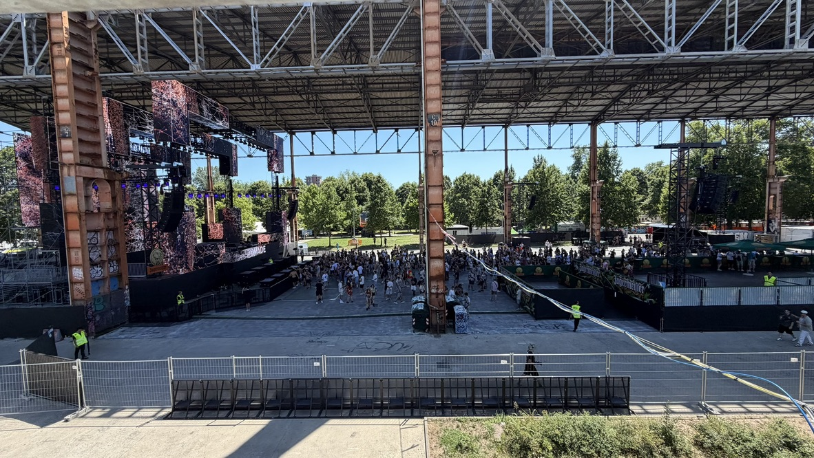
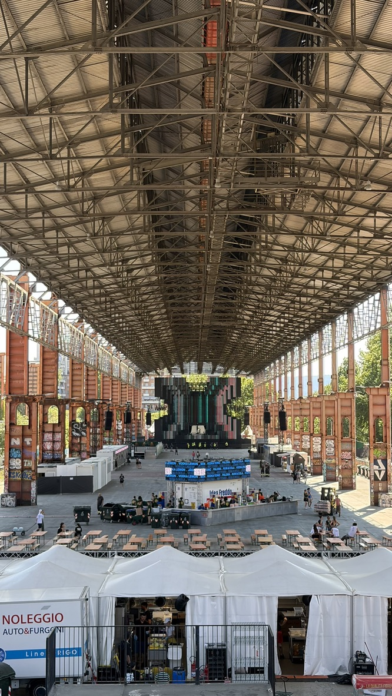
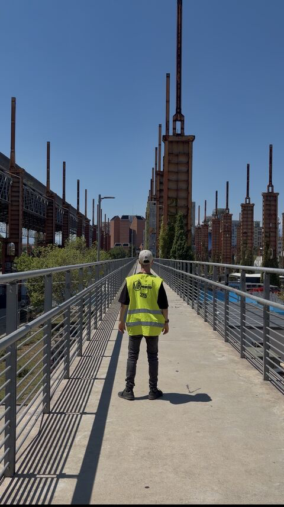

Case study / 2026
Kappa
FuturFestival
Project overview
Kappa FuturFestival is one of Europe’s major electronic music festivals, held at Parco Dora in Turin. I worked with MR Security during the festival weekend, covering venue monitoring and perimeter security across a key area overlooking the main festival site.
My role
Venue Security
Operations.
- Monitored a designated perimeter area with visibility across the main stage and surrounding festival zones.
- Maintained security presence across potential perimeter access points.
- Performed regular patrols throughout the assigned area before and during public opening.
- Monitored venue and crowd activity, maintaining situational awareness throughout the shift.
- Reported irregular activity or access concerns through the security structure when required.
Project context
The assigned area provided an elevated overview across the main festival site, including the main stage and surrounding zones. The position combined perimeter monitoring with broader venue awareness during the transition from final site preparation into public opening.
The role required continuous attention to access points, crowd movement and general activity within the assigned area, while remaining part of the wider security structure operating across the festival.
Experience
Security as part of the wider event operation.Working within the security structure of a large-scale festival reinforced the importance of venue awareness, perimeter control and situational overview as part of the wider live event operation.
LinkedIn post
Read the story on LinkedInGallery
From the site.


